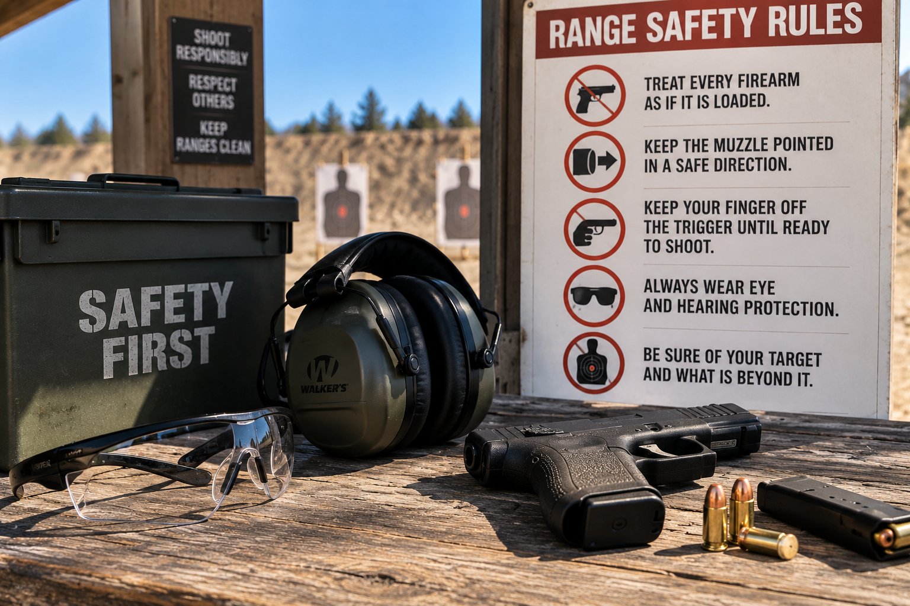

Range Safety
Staying Safe
Safety is an important part of shooting. Following the rules of
the range and handling firearms responsibly helps keep everyone
safe.

Basic Safety Rules
- Treat every firearm as if it is loaded.
- Always keep the firearm pointed in a safe direction.
- Keep your finger off the trigger until ready to shoot.
- Be sure of your target and what is behind it.
- Wear eye and hearing protection.
More Information
Visit the
NSSF firearm safety website
to learn more about firearm safety.
Return to Home